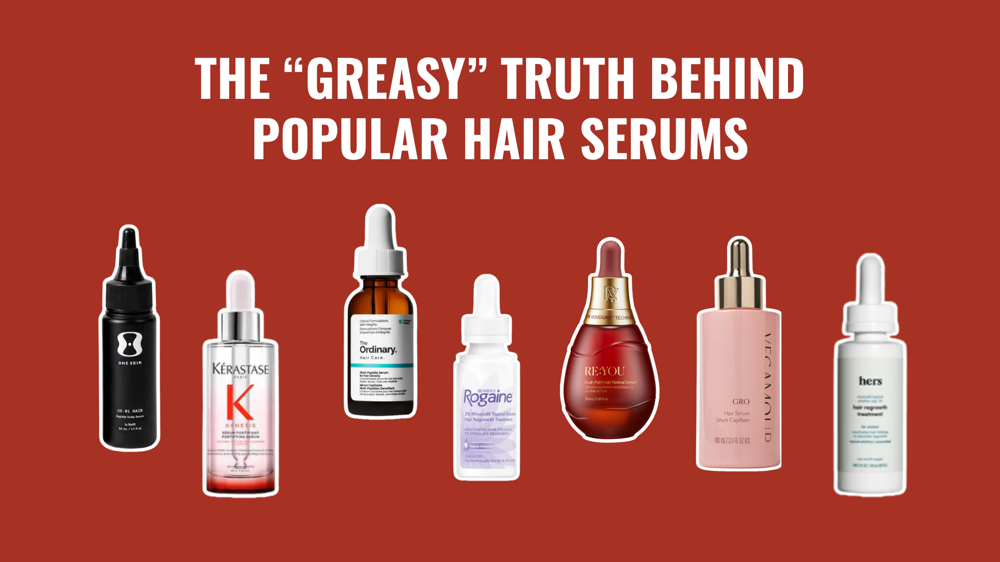
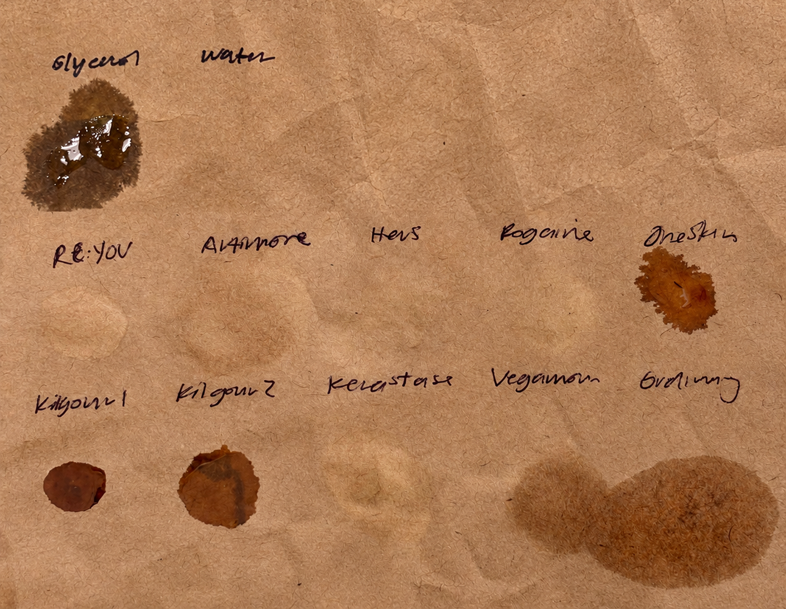
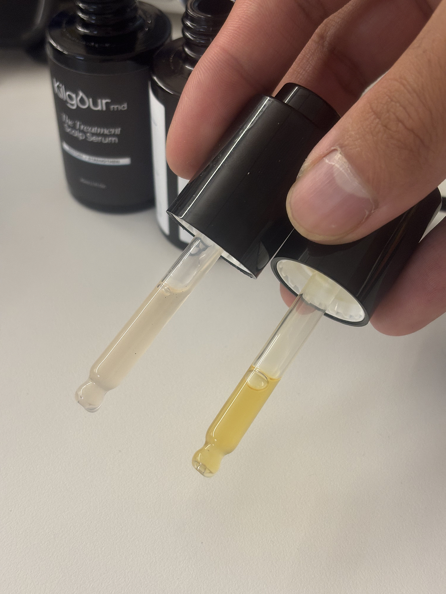

The Top Reasons People Quit Hair Serums, and How to Pick One You Won't
Hair serums require consistent daily use for real results, so the best hair serum for your journey is not just the best ingredients or the best proof. It's whether or not it fits into your daily hair routine.
By Julia Lam
Share:
Updated October 16, 2026 · 8 min read

The #1 Reason People Quit
The biggest reason we see people fall off consistent hair serum use is the texture. If it feels greasy, makes your hair feel wet, or leaves any residue, you're bound to use it less frequently, or worse? Quit altogether.
A lot of serums call themselves "lightweight" and "non-greasy" but who's telling the truth?
We put them to the test →
The TBB Grease Test
We wanted proof, so here's how we tested it: we put a few drops of popular hair serums on a brown paper bag, let them sit for 10 minutes, and compared them to two controls:
water: should absorb quickly and leave no residue
glycerol: should barely absorb and leave a tacky residue
Serums that behave like water fit well into the hair routine you already have. Serums that behave like glycerol are likely to feel greasy and build up residue with each application.
We scored each serum based on the results:
Weightless
Slight buildup
Greasy buildup

The results we're telling: a few clear winners, and a few serums you'll definitely want to avoid.
Texture is only part of the story so we laid out how each serum actually fits into your daily routine. Which ones fit right in, and which ones you have to compromise for.
RE:YOU's Dual-Path Hair Revival Serum is TBB's favorite newcomer this year because instead of just taking up more space on the shelf, it's one of the few brands doing something legitimately unique.
If you're out of the loop, RE:YOU uses novel NOVOGRO™ technology developed by their in-house team of scientists. It's built to tackle hair thinning at the follicle level and outperforms the current gold standard, minoxidil (shown in their clinical trial).
The formula is water-based and genuinely lightweight: it absorbs into the scalp in what feels like seconds, no change in texture, and you can go straight to styling afterwards. In TBB's grease test it left virtually no mark on the brown bag.
A small detail, but we love the dropper's fine angled tip. Precise application, and no excess drip we noticed in the other droppers. And before you ask "is this for me?" It's built to fit any hair routine and hair type: compatible with color treatments, and after you apply it you can style with other products right on top, without waiting or worrying.
TBB TLDRLight, fast-absorbing and built to fit any routine and hair type. Results that outperform minoxidil, and the easiest serum to actually stick with.
Some users experience scalp irritation when first starting
Most residue left behind in our grease test
Type: Water-based serum | Key ingredient(s): Redensyl, Procapil, Capixyl, Baicapil, caffeine | Dose: A few drops, once daily | Grease rating: 2 — Slight buildup | Side effects: Some scalp irritation when starting
The Ordinary packs five big-name ingredient complexes into the cheapest bottle on this list. Unfortunately it loses some points on texture. In our grease test, it left the most visible spot after 24 hours, so on paper (pun intended), it's the serum where you're most likely to complain about the texture.
Users agree, and they've come up with workarounds: transfer it into a roller bottle to spread over the scalp, apply it only to a clean scalp, or cut back to a few applications a week, not every day. That last one is not ideal. Like every serum on this list, good results require consistent daily use.
The brand also suggests applying at bedtime, so it can properly dry before styling. You'll have to build your routine around it a little, but for some the price might convince you to make a few compromises.
TBB TLDRA few compromises here and there, but as the cheapest option you could say, "you get what you pay for."
Includes fragrances and essential oils that can cause irritation
Mixed reviews on greasiness
Type: Water-based serum | Key ingredients: red clover and mung bean sprouts, turmeric, caffeine, peptides | Dose: one dropper, once daily | Grease rating: 2 — Slight buildup | Side effects: essential oils and fragrances may irritate sensitive skin
Vegamour GRO is the plant-based, clean-beauty favorite of hair serums. On TBB's grease test, it ranked just better than The Ordinary, leaving a faint residue on the paper after 24 hours. For anyone who experiences greasiness, users suggest applying it to damp hair after washing, and it may absorb better and leave your roots feeling less greasy.
One flag is for users with sensitive skin: five ingredients on the label (bergamot peel oil, limonene, linalool, linalyl acetate and pinene) are on the EU's official list of fragrance allergens. This does not necessarily apply to everyone, but anyone worried about skin irritation should be wary of potential side effects.
Need to buy and use two separate serums, not just one bottle
Most expensive
Failed our grease test
Type: Water-based, dual serum routine | Key ingredients: Redensyl, Capixyl, Procapil, saw palmetto, rosemary | Dose: 1 dropper of each serum, once a day | Grease rating: 3 — Greasy buildup | Side effects: Can change color of lighter hair
KilgourMD was founded by Stanford-trained dermatologist Dr. James Kilgour, and unlike everything else on this list, it's not just one serum. The routine is split into two: one serum for prevention and one serum for treatment. Both should be used every day and at almost $90 per serum, that also makes it the priciest routine on our list.
Visually, it's the most gel-like formula here, and unlike the others, it isn't clear.

On our grease test, it performed the worst: it beaded on the surface instead of soaking in, and left a clear spot of residue behind. This is one you're likely to feel on your scalp long after you apply it.
And one more flag for anyone with blonde or gray hair: users (and the brand's own FAQ section) mention orange discoloration in lighter hair.
TBB TLDRDermatologist-built, but it's two serums a day and the worst performers on our grease test.
Rogaine's hero ingredient is minoxidil and if you've done your research, you already know the story: FDA-approved, current gold standard treatment for hair thinning, and it comes with side effects. Scalp irritation, pet toxicity, and the notorious dread shed are all reasons why people stop using minoxidil before they can see any results.
On TBB's grease test, Rogaine actually dried the cleanest of all the serums, but it falls short for us because it's not built for every routine. The dose is twice a day, which is a lot considering not everyone can even keep up with once a day. There's the side effects above, and it takes hours to dry before you can style on top of it (as cited by both users and the brand itself).
So the question is no longer "does it fit into your routine?" Now it's, "Does your routine fit the product?"
TBB TLDRUses FDA-approved minoxidil, the current gold standard for hair thinning, but comes with several trade-offs.
Greasy roots are why most people give up on a hair serum. But as it turns out, grease is only part of the story.
KilgourMD failed our grease test and is the most expensive routine on the list. Rogaine passed our grease test, but asks for two doses a day plus hours of drying time. The Ordinary is the budget pick, if you're willing to work around its texture, and Vegamour is the plant-based pick, with a caveat for sensitive skin.
RE:YOU was the one that checked every box: virtually no residue, a formula that outperforms minoxidil, and compatible with your hair type and hair routine. The most effective serum is the one you're still using three months from now, and this is the one we'd bet on.